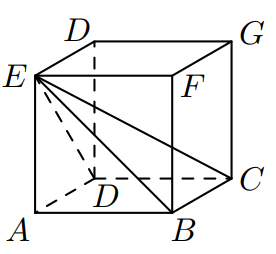
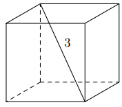

Objętość sześcianu jest równa 729. Długość przekątnej tego sześcianu jest równa
Długości trzech krawędzi wychodzących z jednego wierzchołka prostopadłościanu są trzema kolejnymi parzystymi liczbami naturalnymi. Najdłuższa krawędź tego prostopadłościanu ma długość p. Objętość tego prostopadłościanu jest równa
Długości trzech wychodzących z jednego wierzchołka krawędzi prostopadłościanu są trzema kolejnymi liczbami naturalnymi parzystymi. Najdłuższa krawędź tego prostopadłościanu ma długość 10. Pole powierzchni całkowitej tego prostopadłościanu jest równe
Dany jest prostopadłościan ABCDEF GH, w którym podstawy ABCD i EF GH są kwadratami o boku długości 6. Przekątna BH tego prostopadłościanu tworzy z przekątną AH ściany bocznej ADHE kąt o mierze 30° (zobacz rysunek).
Przekątna BH tego prostopadłościanu ma długość równą
Przekątna ściany sześcianu ma długość \(2\sqrt{2}\). Objętość tego sześcianu jest równa
Podstawą graniastosłupa prawidłowego czworokątnego jest kwadrat o boku długości 4. Przekątna tego graniastosłupa jest nachylona do płaszczyzny podstawy pod kątem α takim, że tg α = 2 (zobacz rysunek).
Wysokość tego graniastosłupa jest równa
Dany jest sześcian ABCDEF GH o krawędzi długości 5. Wewnątrz sześcianu znajduje się punkt P (zobacz rysunek).
Suma odległości punktu P od wszystkich ścian sześcianu ABCDEF GH jest równa
Dany jest sześcian F o krawędzi długości a i objętości V oraz sześcian G o krawędzi długości 3a. Objętość sześcianu G jest równa
Przekątna sześcianu ma długość \(5\sqrt{3}\). Wtedy objętość tego sześcianu jest równa
Pole powierzchni całkowitej sześcianu jest równe 12. Suma długości wszystkich krawędzi tego sześcianu jest równa
Przekątna sześcianu ma długość \(4\sqrt{3}\). Pole powierzchni tego sześcianu jest równe
Dany jest prostopadłościan o wymiarach 30 cm × 40 cm × 120 cm (zobacz rysunek), a ponadto dane są cztery odcinki a, b, c, d, o długościach – odpowiednio – 119 cm, 121 cm, 129 cm i 131 cm.
Przekątna tego prostopadłościanu jest dłuższa
Suma długości wszystkich krawędzi sześcianu jest równa 96 cm. Pole powierzchni całkowitej tego sześcianu jest równe
Dany jest sześcian ABCDEF GH. Przekątne AC i BD ściany ABCD sześcianu przecinają się w punkcie P (zobacz rysunek).
Tangens kąta, jaki odcinek P H tworzy z płaszczyzną ABCD, jest równy
Pudełko w kształcie prostopadłościanu ma wymiary 5 dm × 3 dm × 2 dm (zobacz rysunek)
Przekątna KL tego prostopadłościanu jest – z dokładnością do 0,01 dm – równa
Jeżeli α oznacza miarę kąta między przekątną sześcianu a przekątną ściany bocznej tego sześcianu (zobacz rysunek), to
Długość przekątnej sześcianu jest równa 6. Stąd wynika, że pole powierzchni całkowitej tego sześcianu jest równe
W sześcianie EF GHIJKL poprowadzono z wierzchołka F dwie przekątne sąsiednich ścian, F I oraz FK (zobacz rysunek). Miara kąta IFK jest równa
Pole powierzchni całkowitej sześcianu jest równe 12. Suma długości wszystkich krawędzi tego sześcianu jest równa
Dany jest sześcian ABCDEF GH. Siatką ostrosłupa czworokątnego ABCDE jest
Krawędź sześcianu ma długość 9. Długość przekątnej tego sześcianu jest równa:
Pole powierzchni całkowitej sześcianu jest równe 54. Długość przekątnej tego sześcianu jest równa
W prostopadłościanie ABCDEF GH mamy: |AB| = 5, |AD| = 4, |AE| = 3. Który odcinek AB, BG, GE, EB jest najdłuższy?
Objętość sześcianu jest równa 27 cm³. Jaka jest suma długości wszystkich krawędzi tego sześcianu?
Pole powierzchni całkowitej prostopadłościanu o wymiarach 5 × 3 × 4 jest równe
Pole powierzchni całkowitej sześcianu jest równe 150 cm². Długość krawędzi tego sześcianu
Dany jest prostopadłościan ABCDEF GH, w którym prostokąty ABCD i EF GH są jego podstawami. Odcinek BH jest przekątną tego prostopadłościanu.
Na którym rysunku prawidłowo narysowano, oznaczono i podpisano kąt α pomiędzy przekątną BH prostopadłościanu a jego ścianą boczną ADHE? Zaznacz właściwą odpowiedź spośród podanych.
Dane są dwa prostopadłościany podobne: B1 oraz B2. Objętość prostopadłościanu B1 jest równa V , a objętość prostopadłościanu B2 jest równa 27V . Pole powierzchni całkowitej prostopadłościanu B1 jest równe P. Dokończ zdanie. Wybierz odpowiedź A, B albo C oraz jej uzasadnienie 1., 2. albo 3.
Pole powierzchni całkowitej prostopadłościanu B2 jest równe
ponieważ stosunek pól powierzchni całkowitych prostopadłościanów podobnych jest równy
Przekątna prostopadłościanu o wymierach 3 × 4 × 5 ma długość
Suma długości wszystkich krawędzi sześcianu jest równa 24. Objętość tego sześcianu jest równa
Przekątna sześcianu ma długość 3. Pole powierzchni całkowitej tego sześcianu jest równe
Pole powierzchni całkowitej sześcianu jest równe 24 cm². Objętość tego sześcianu jest równa
Przekątna prostopadłościanu o wymiarach 2 × 3 × 5 ma długość